滿意度不用猜。拆成 7 個驅動因子,每一個都到真實網站上實測「有沒有被滿足」, 再依 Persona 權重換算需求覆蓋率、滿意度、期待落差與推薦率。 本報告附上每一個因子對應的實際網頁設計截圖。
直接給一個「滿意度 85 分」是沒有意義的——那只是猜測。 本模擬的做法是把滿意度拆解成使用者實際在意的事,再逐項檢查網站到底有沒有做。
| 步驟 | 產出 | 做法 |
|---|---|---|
| ① | 需求覆蓋率(實測) | 7 個驅動因子逐一到網站上檢查,依 Persona 權重加權出「網站有處理到的比例」 |
| ② | 滿意度(推估) | 覆蓋率 × 執行品質係數 0.88,上限 92。因為「有做」不等於「做得好」 |
| ③ | 推薦率 NPS(推估) | 由「滿意度 − 進站前期待」的落差決定。落差 ≥15 為推薦者,<0 為貶抑者 |
第一版模型直接把覆蓋率當滿意度,結果跑出 CSAT 100 / NPS +100—— 這種數字沒有人會相信,問題出在因子是二元的(有做/沒做),全滿就爆表。 因此把「實測得到的」與「推估出來的」明確分開,並加上折減。 係數 0.88 的錨點是報告載新北 2026 年第 1 季完成訪查者中 97% 表示認養後更幸福, 但那是已完成追蹤者的事後滿意度(存活者偏誤),用於新平台的事前體驗必須折減。
每位 Persona 對 7 個因子的在意程度不同,權重依訪談中該類型反覆表達的內容設定(合計 100)。
| Persona | 占比 | 進站前期待 | 最在意的因子(權重) |
|---|---|---|---|
| 可培育新手 | 28% | 78 | 流程不繁瑣 30、不被審判 22、有人幫 18 |
| 隱私敏感專業者 | 18% | 62 | 不被監視 34、不被審判 18、資訊完整 16 |
| 共感陪伴型 | 22% | 85 | 資訊完整 30、有人幫 22、負擔得起 14 |
| 家庭決策者 | 20% | 70 | 說得動家人房東 26、資訊完整 18、有人幫 14 |
| 戒心回流者 | 12% | 45 | 不被審判 34、不被監視 20、資訊完整 16 |
進站前期待值也依訪談設定:共感型最高(85,最容易失望)、戒心回流者最低 (45,「認養人都說送養人是很機車的」)。推薦率由落差決定,不由絕對分數決定。
以下每一組都是同一個網址、同一個視窗尺寸,只切換分組或階段的實際畫面。 左為未滿足(對照組 = 現況市場的體驗),右為滿足(本平台的設計)。
「認養人其實我覺得,他們被檢核的過程裡面也很不舒服。」 訪談 1・大型協會負責人
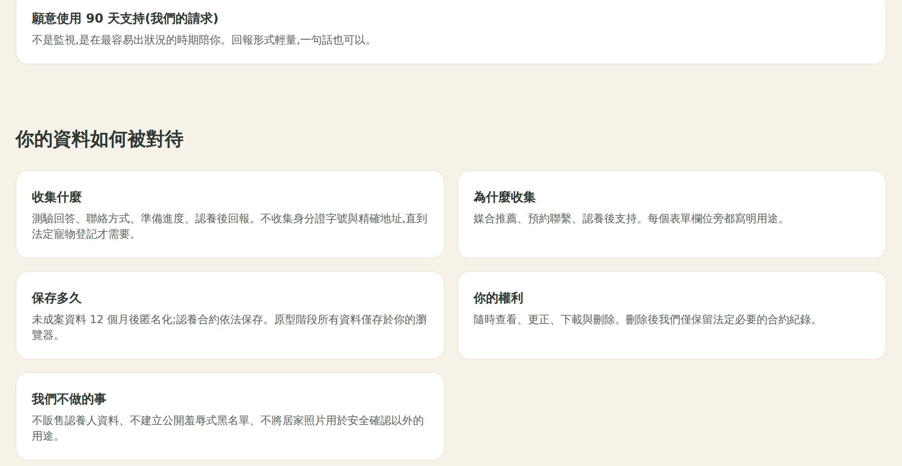
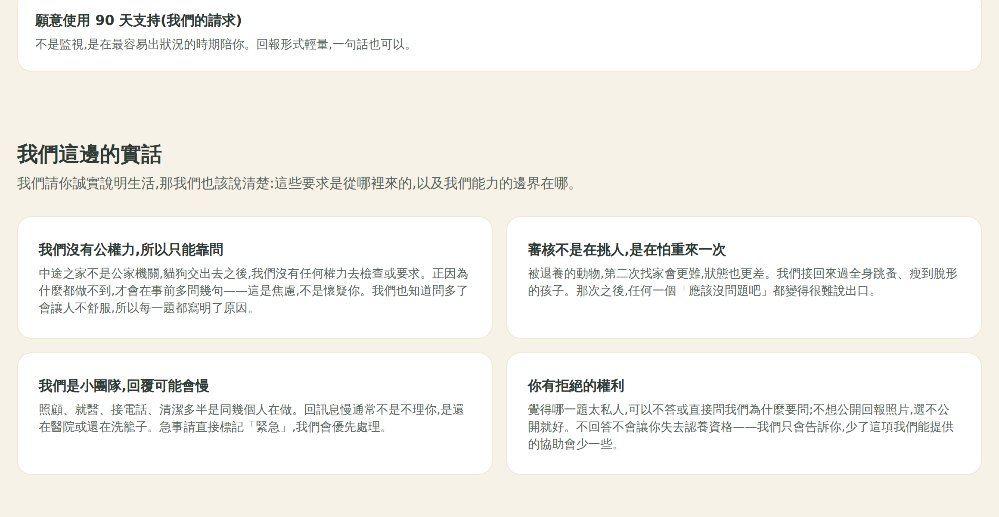
「資訊完整性、便利性與流程複雜性會直接影響認養意願。」 市場報告引政大 2021 研究
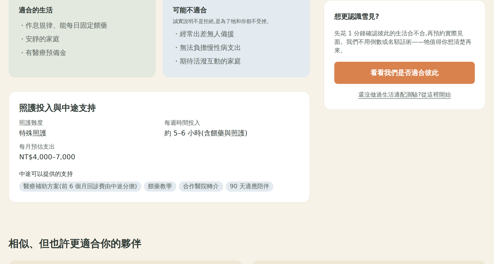
「我覺得它有點像電子腳鐐⋯但我覺得我們沒有辦法去講抗拒這樣子的事情的人就是壞人, 他很有可能只是非常在意自己的隱私而已。」 訪談 2
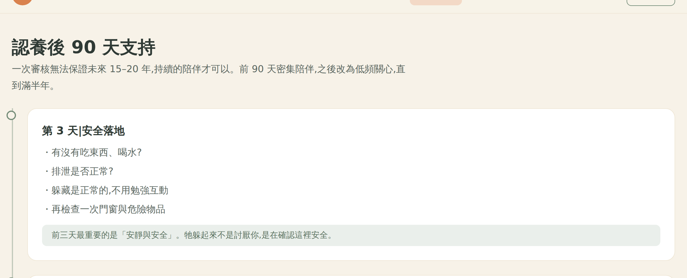
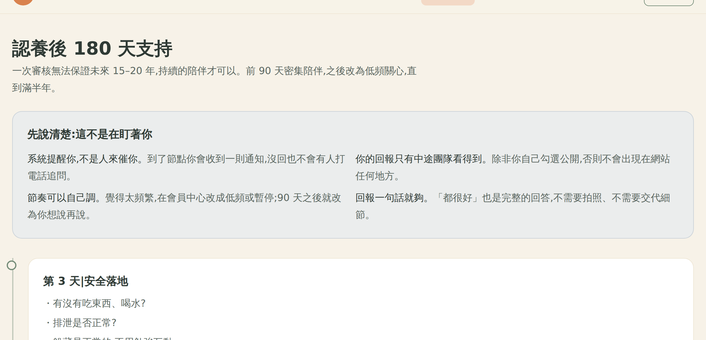
「我發現大家點進去表單,看到那一堆問題的時候,就不會有人填了。」 訪談 3・社團管理員。訪談 4 亦稱「問卷一出去人就不見了」。
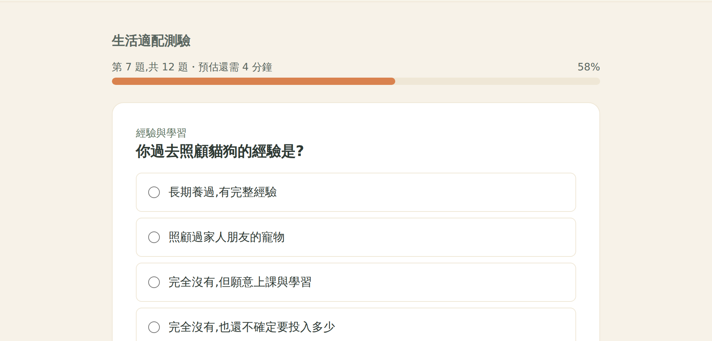
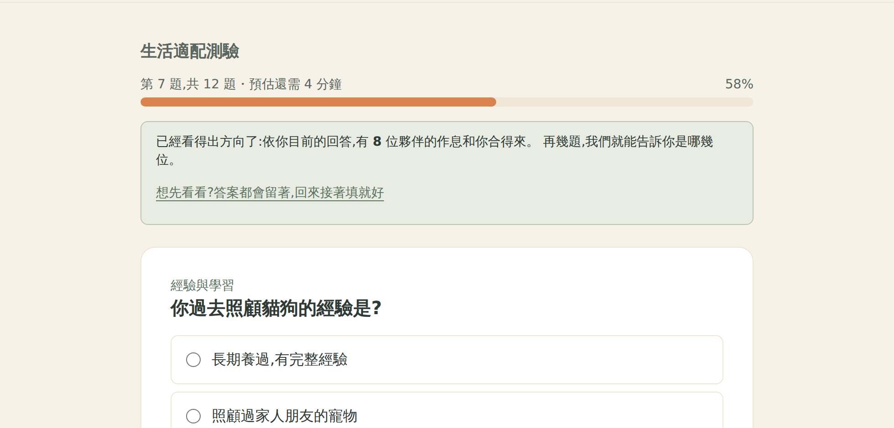
「你有任何的問題打電話給我們其實是沒有關係的⋯提供物資協助,甚至我們提供人力過去陪你。」 訪談 2
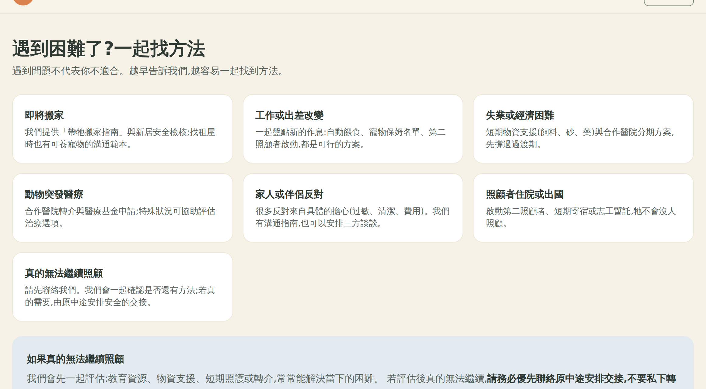
「影響認養最強的因素之一是行為控制知覺,也就是經濟能力與資訊是否清楚。」 市場報告引政大 2021 研究
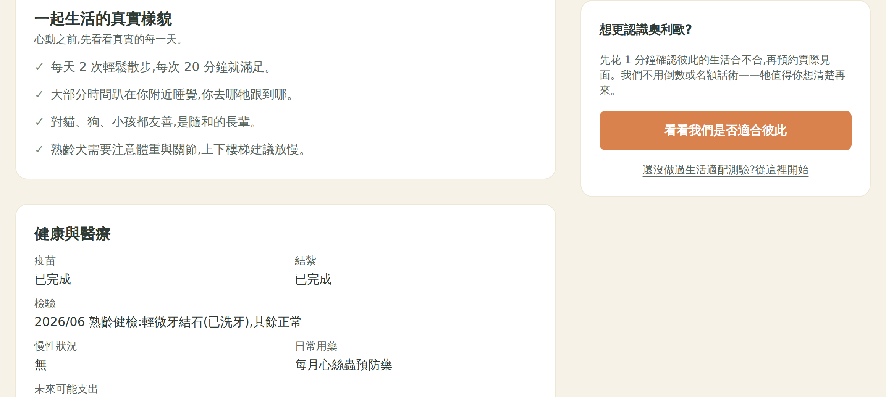
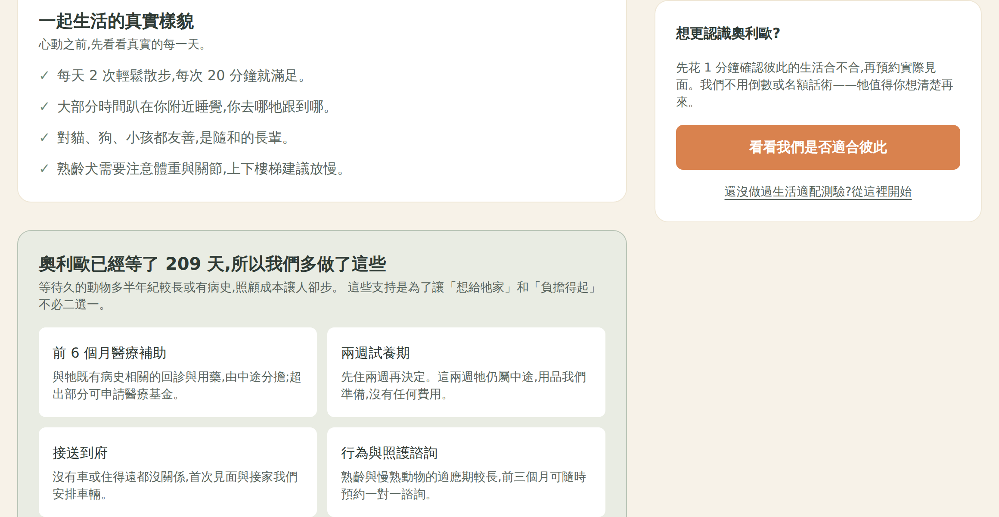
「同住家人一定要同意,因為曾經有碰過說小孩他想認養,可是後來父母不同意。」 訪談 4;訪談 3 亦問「他的房東有沒有同意讓他養貓」。
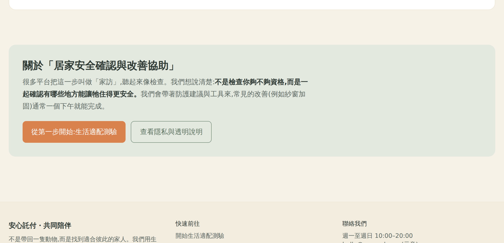
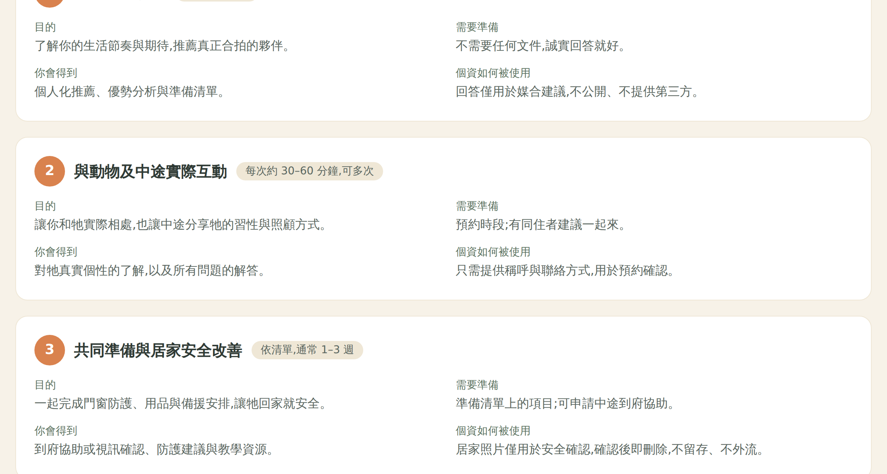
| 驅動因子 | 現況市場 | S1 | S2 | S3 | S4 |
|---|---|---|---|---|---|
| D1 不被審判 | ✘ | ✔ | ✔ | ✔ | ✔ |
| D2 資訊完整可判斷 | ✔ | ✔ | ✔ | ✔ | ✔ |
| D3 不被監視 | ✘ | ✔ | ✔ | ✔ | ✔ |
| D4 流程不繁瑣 | ✘ | ✔ | ✔ | ✔ | ✔ |
| D5 遇到問題有人幫 | ✔ | ✔ | ✔ | ✔ | ✔ |
| D6 負擔得起 | ✘ | ✘ | ✘ | ✘ | ✔ |
| D7 說得動家人房東 | ✘ | ✔ | ✔ | ✔ | ✔ |
| 階段 | 需求覆蓋率 實測 | 滿意度 推估 | 推薦者 | 貶抑者 | NPS |
|---|---|---|---|---|---|
| 現況市場(對照組) | 33 | 29 | 0% | 100% | −100 |
| S1 信任與摩擦 | 91 | 81 | 30% | 22% | +8 |
| S2 久候曝光 | 91 | 81 | 30% | 22% | +8 |
| S3 久候媒合 | 91 | 81 | 30% | 22% | +8 |
| S4 久候門檻 | 100 | 88 | 50% | 0% | +50 |
覆蓋率 33 → 91、滿意度 29 → 81。D1、D3、D4、D7 四個因子一次補齊。 信任與摩擦這一組才是本平台的主要差異化來源。
覆蓋率停在 91 不動。久候曝光與久候排序是為動物做的,不是為認養人做的—— 它們提升久候動物的機會(已於前一份策略階梯報告證實),但不會讓使用者更滿意。 兩者必須用不同指標評估,不能混在同一組 KPI。
S4 的支持包補上最後一個未滿足因子,貶抑者歸零。 與報告「行為控制知覺是影響認養意願最強因素之一」的判斷一致。
| Persona | 占比 | 進站前期待 | 滿意度 | 落差 | 分類 |
|---|---|---|---|---|---|
| 可培育新手 | 28% | 78 | 88 | +10 | 被動者 |
| 隱私敏感專業者 | 18% | 62 | 88 | +26 | 推薦者 |
| 共感陪伴型 | 22% | 85 | 88 | +3 | 被動者 |
| 家庭決策者 | 20% | 70 | 88 | +18 | 推薦者 |
| 戒心回流者 | 12% | 45 | 88 | +43 | 推薦者 |
上面所有的滿意度都建立在一組承諾上:90/180 天支持、醫療補助、兩週試養、接送到府、行為諮詢。 但這些承諾需要人力,而人力正是這個產業最缺的東西。
| 情境 | 滿意度 | NPS | 相對基準 |
|---|---|---|---|
| 基準(全部兌現) | 88 | +50 | — |
| 求助回覆延遲到 3 天 | 75 | −20 | NPS −70 |
| 醫療補助排隊或暫停 | 81 | +8 | NPS −42 |
| 兩者同時發生 | 67 | −40 | NPS −90 |
只要一項承諾沒兌現,NPS 從 +50 掉到 −20,落差 70 分。 因為平台的價值主張就是那些承諾;承諾落空時使用者失去的不只是一項功能, 而是「這個平台跟以前那些不一樣」這個判斷本身。
「照顧、就醫、接電話、清潔多半是同幾個人在做⋯我沒空。」 訪談 4,談自己無法持續盯著認養人的原因。
「我送養 100 隻貓,每一隻貓你說一個禮拜要回報一次,或一個月要回報一次,我哪會記得。」 訪談 2。
市場報告的數字與此一致:全國動保四類人力合計僅 1,127 人, 對應 27,438 隻收容流量與 141,584 隻遊蕩犬推估量,屬「高壓低冗餘」系統。
醫療補助、試養期、接送應改為依中途當期量能動態顯示;沒有量能時就不顯示。 少一項功能的損失(NPS −42),遠小於顯示了卻做不到的損失。
目前寫「1–2 個工作天內回覆」。建議改為顯示該中途近 30 天的實際回覆中位數, 並允許中途標記「本週已滿」。誠實的慢,好過失信的快。
訪談 2 唯一主動說「所有的中途都會好很多」的功能是自動化的回報系統。 中途省下的時間,才是兌現承諾的原料。
| 順序 | 要驗證什麼 | 方法與最小樣本 |
|---|---|---|
| 1 | 七個因子的權重是否正確 | 最大差異量表(MaxDiff),n≈120,可在單一中途的既有認養人名單上做 |
| 2 | 進站前期待值的真實分布 | 落地頁前置單題(1–10),n≈300,成本近乎為零 |
| 3 | 執行品質係數 0.88 是否合理 | S1 金絲雀跑滿 4 週後對實際使用者發 CSAT,與覆蓋率回歸對照 |
| 4 | 履約失敗的真實代價 | 不需實驗——直接記錄回覆時間,與該案後續 NPS 做相關分析 |
模擬顯示這個網站能把使用者體驗從現況的 NPS −100 帶到 +50, 而且最大的貢獻來自「不被審判、不被監視、流程不繁瑣、說得動家人」這一組信任設計, 不是久候動物功能。但整個 +50 建立在承諾能兌現的前提上—— 一項沒做到就掉到 −20,比不做還糟。 因此上線前最該做的不是再加功能,而是把承諾綁到真實量能上。
可重現性
模擬腳本 ux-test/market-response.mjs(EXPORT= 可輸出 JSON);
截圖腳本 ux-test/capture-driver-shots.mjs,對執行中的網站擷取,未經修圖。
每組對照皆為同一網址、同一視窗尺寸,僅切換分組或發布階段。
訪談與報告引文均為原文節錄。網站中所有信任數字、捐款流向與幸福回報時間軸皆標註為示意資料。